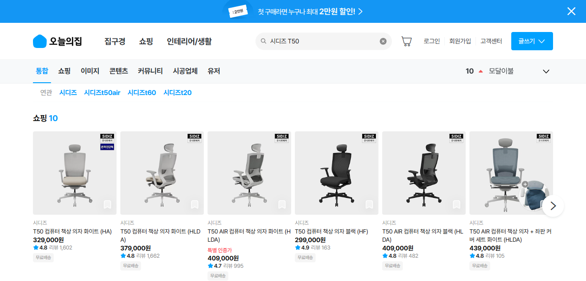
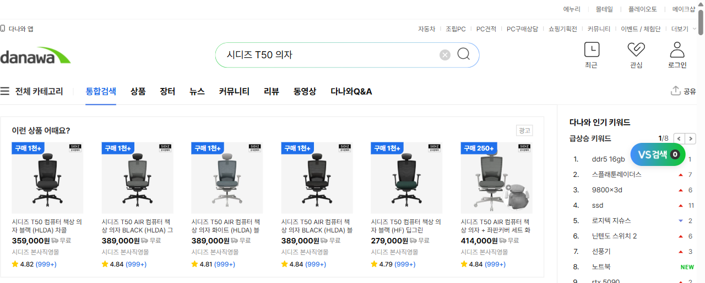
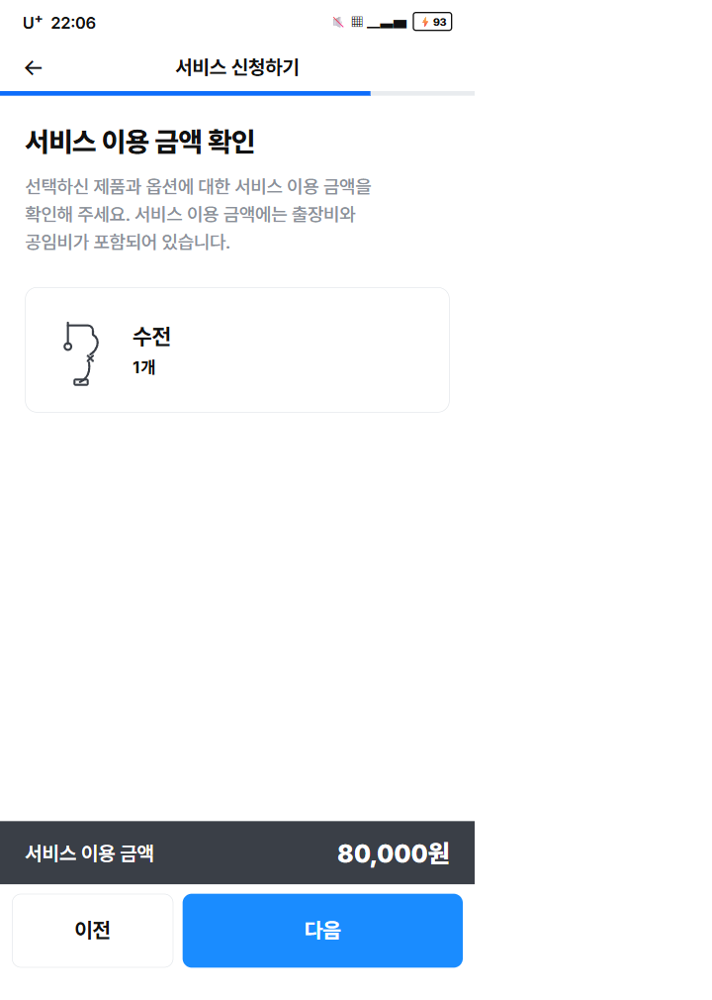

모으는 건, 이미 잘합니다.
문제는 "왜 굳이 여기서 사야 하죠?"입니다.
오늘의집은 발견형 커머스로 유저를 모으는 일(Acquisition)은 최고 수준입니다. 하지만 결제·계약 '직전'에서 — 가격·시공·신뢰의 "왜 오늘의집?"에 답하지 못해 Activation이 샙니다. 그 퍼널을 풀겠습니다.
Acquisition은 증명됐다 — 다음 병목은 Activation

모으기는 성공의 증거가 있다
집들이 UGC 1,200만·앱 3,000만+ 다운로드, 개인화 추천으로 홈 클릭 전환율 약 2배(자사). 발견형 커머스로 트래픽을 만드는 역량은 검증됨.
그런데 '사게 만드는' 구간은?
결제·계약 직전, 유저는 묻습니다 — "이거 여기서 사는 게 맞아?" 이 질문에 답을 못 주면 모은 트래픽이 결제로 안 넘어갑니다. 이 발표는 acquisition이 아니라 그 다음, activation을 다룹니다.
"정말, 믿고 사도 될까?" — 망설이게 하는 네 빈틈
공통 원인 하나 — "굳이 오늘의집이어야 할 이유"를 결제·계약 직전에 못 준다.
"제일 싸다는데" 비교가 안 된다
플랫폼 내 단일 가격만. 타 사이트 대비 싼지 알 길이 없어 결국 네이버에서 재검색 → 이탈.
굳이 '오늘의집 시공'일 이유가 없다
설치 결제화면이 가격만 덩그러니. 누가·얼마가 적정·믿을 만한지 안 풀려 '다음'을 못 누른다.
한 번 걸러도 여전히 방대
세그먼트 시도는 좋은데, 필터 후에도 볼 게 너무 많아 "뭘 눌러야 하지?"에서 멈춘다.
결국 '무료 견적 문의'로만 떨군다
진짜 페인(이 가격 맞나·믿을만한가)을 안 건드리고 견적 문의로만 보내니 구매 의향이 안 생긴다.
네 빈틈 모두 결제·계약 '직전'에 있습니다 = 전부 Activation 누수. 지금부터 하나씩, '이미 하는 것'과 '빈틈'을 구분해 풉니다.
"제일 싸다는데" — 비교할 방법이 없다


굳이 '오늘의집 시공'일 이유가, 이 화면엔 없다

'80,000원'만 덩그러니 — 판단할 정보가 없다
- 내역 분해 없음 — 출장비·공임비가 각각 얼마인지 모름
- 누가 오는지 모름 — 기사 프로필·평점·후기 없음
- 적정성 판단 불가 — 동종 시공 사례·소요시간·타 업체 시세 비교 없음
- 책임 주체 불명 — 하자 시 누가 보증하는지 화면에 없음
한 번 걸러도 여전히 방대 — "뭘 눌러야 하죠?"
좋은 시도, 아쉬운 끝맺음
유저별로 맞춤 정보를 보여주려는 방향은 옳다. 문제는 한 번 필터링한 뒤에도 봐야 할 게 방대하다는 것 — 좁혀줬다기보다 '큰 묶음'을 줬을 뿐.
필요한 건 '한 단계 더'
필터 후에도 행동이 없으면 — "이 중에 뭐가 제일 중요해요?"를 한 번 더 물어 결과를 추려주는 점진적(progressive) 재세그먼트가 빠져 있다.
결국 '무료 견적 문의'로만 떨군다
모든 길이 '무료 견적'으로 수렴
유저의 진짜 질문은 "이 가격 맞아? 믿을 만해? 우리 집에 맞아?"인데, 화면은 그걸 안 건드리고 '무료 견적 문의'라는 단일 CTA로만 보낸다. 페인이 안 풀리니 구매·계약 의향이 생기지 않는다.
견적 이후도 플랫폼이 안 끌고 간다
견적 문의 후엔 업체가 연락·미팅으로 끌고 가고, 플랫폼 차원의 후속 넛지(미결제·미계약 리마인드, 페인 해소형 메시지)는 거의 없다. acquisition은 플랫폼이, activation은 '남'이 책임지는 구조.
즉, CRM이 '더 모으기'에는 쓰이지만 '사게 만들기'에는 덜 쓰인다. — 다시, activation의 빈자리.
정리 — Acquisition은 O, Activation은 물음표
측정의 빈틈
acquisition 지표(유입·MAU·노출)는 화려하지만, activation 지표(견적→계약, 탐색→첫구매)의 단계별 누수는 잘 안 보인다. 이 퍼널이 잘 되고 있는지조차 명확하지 않다.
그래서 내가 할 일
① 측정으로 activation 누수를 드러내고 → ② '이미 가진 자산'을 결제·계약 직전까지 끌어와 네 빈틈을 닫는다. 모은 유저를 '사게' 만든다.
활성화 4 레버 — '이미 가진 자산'을 결제 직전까지
관통 원칙 — 없는 걸 새로 만들기보다, 오늘의집이 이미 가진 자산(리뷰·자재가·견적서·세그먼트)을 '망설이는 그 화면'으로 옮긴다.
단품 상세에 '비교 + 신뢰 근거' 상시화
패키지에만 있던 최저가 자신감을 단품까지 — 타사 비교·정품·AS·리뷰로 "다른 데 검색할 필요 없음".
설치 결제화면을 '신뢰 화면'으로
80,000원 내역 분해 + 기사 프로필·평점 + 동종 전후·소요시간 + 하자보증을 결제 직전에.
'한 단계 더' 점진적 재세그먼트
필터 후 무액션 감지 → "뭐가 제일 중요해요?" 재질문으로 방대한 목록을 좁혀준다.
'무료견적' 너머 activation 루프
미결제·미계약 리타게팅, 견적 후 후속, 페인 해소형 메시지로 관심을 계약·구매까지.
단품 상세를, '비교가 끝나는 화면'으로
무엇을 더하나
- 타사 가격 비교 위젯 — 같은 SKU의 네이버·쿠팡 최저가를 상세에 노출(이미 가진 패키지 최저가보장 로직을 단품까지 확장)
- '왜 여기가 믿을 만한가' 근거 — 정품 인증·AS·무료배송·리뷰 수를 가격 옆에 묶어 표시
- 최저가 보장 배지 — "더 싼 곳 있으면 차액 보상"을 단품에도
왜 activation이 열리나
유저가 네이버로 이탈해 비교하던 행동을, 상세페이지 안에서 끝내게 만든다. "여기가 제일 이득"이 화면에서 증명되면 결제 직전 망설임이 사라진다.
측정 — 상세→이탈 후 재방문율↓, 상세→장바구니→결제 전환율↑
net-new인 이유 — 패키지엔 최저가 보장이 있지만 단품 상세엔 타사 비교·신뢰 근거가 상시 노출되지 않음(검증 완료). 기존 로직의 '적용 범위 확장'이라 실행 난도도 낮다.
그 '80,000원' 화면을, 신뢰 화면으로 바꾼다
AFTER · 같은 화면에 4가지를 더한다
- 가격 내역 분해 — 출장비 ₩ / 공임비 ₩ / 자재비 ₩ (이미 가진 '자재가 600종 DB' 활용)
- 담당 기사 카드 — 사진·평점·시공 건수·실제 후기 (시공 리뷰 3만건 자산 연결)
- 동종 시공 전/후 + 소요시간 — "수전 교체 보통 30분·이런 결과"
- 오늘의집 책임 보증 배지 — 하자 시 보장 주체를 결제 전에 명시
왜 activation이 열리나 — "이 가격 맞나·믿어도 되나"가 그 화면에서 풀리면 '다음' 버튼의 망설임이 사라진다. 측정: 견적 화면 진입→신청 완료 전환율.
'한 단계 더' 좁히고, '무료견적' 너머로 잇는다
점진적 재세그먼트
필터 후 스크롤만 하고 클릭이 없으면(무액션 감지) → "예산? 평수? 무드 중 뭐가 제일 중요해요?" 한 번 더 물어 결과를 5~10개로 추려준다.
activation 루프
'무료견적' 단일 CTA를 다음 행동 넛지로 분기 — 장바구니·찜 미결제 리타게팅, 견적 후 "비슷한 시공 후기·예상 일정" 푸시, 가격 인하 알림.
공통 측정 — 탐색→첫구매 전환율, 견적→계약 전환율, 세그먼트별 누수 단계. activation이 '보이게' 만든다.
이 퍼널이 잘 되는지, 비로소 보이게 한다
"이 퍼널이 잘 되고 있는지 모르겠다"는 상태를 끝낸다 — activation을 단일 북극성과 단계별 누수로 가시화하고, 그 위에서 4개 레버를 실험으로 검증.
모으는 데서 멈추지 않고, 사게 만들겠습니다
퍼널 누수를 데이터로 닫아본 5년차
퍼포먼스·CRM 운영으로 유입→전환 누수 지점을 SQL·코호트로 찾아 액션으로 닫아온 경험. acquisition이 아니라 activation에서 성과를 내왔다.
소비자로 직접 페인을 겪었다
수전 교체 결제 화면 앞에서 '다음'을 못 누른 그 경험 — 유저의 망설임을 직접 알기에, 추상이 아닌 '그 화면'을 고치는 안을 만든다.
'이미 있는 것'과 '빈틈'을 가른다
제안 전에 동영상 리뷰·지정일 배송·패키지 보장이 이미 있는지 검증부터 했다. 회사가 한 일을 존중하고, 진짜 빈자리만 짚는다.
큰 자산을 작은 화면까지 잇는다
리뷰 3만건·자재가 DB·세그먼트 CRM 같은 자산을, 유저가 망설이는 '바로 그 화면'으로 옮기는 일 — 신규 개발보다 재배치로 빠르게 성과.
잘 모으는 건, 이미 증명됐습니다.
이제 '왜 굳이 여기서'에 답할 차례입니다.
가격은 비교가 끝나는 화면으로, 시공은 믿어도 되는 화면으로, 탐색은 한 단계 더 좁혀주고, CRM은 무료견적 너머로 — 오늘의집이 이미 가진 자산을 '망설이는 그 화면'으로 옮겨, 모은 유저를 사게 만들겠습니다.